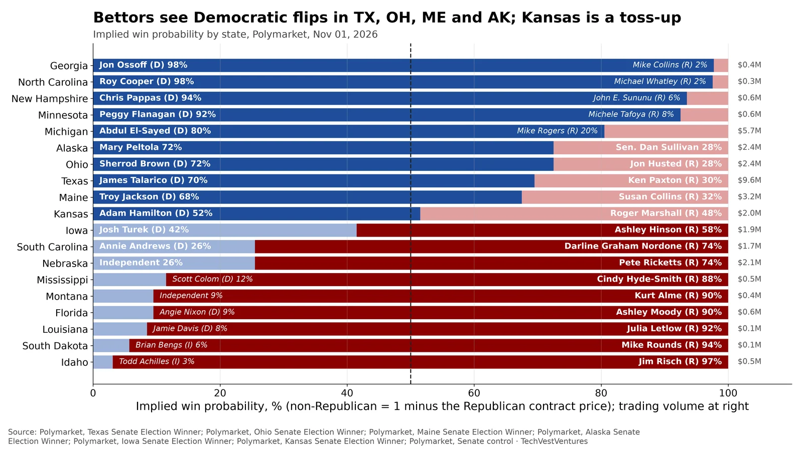
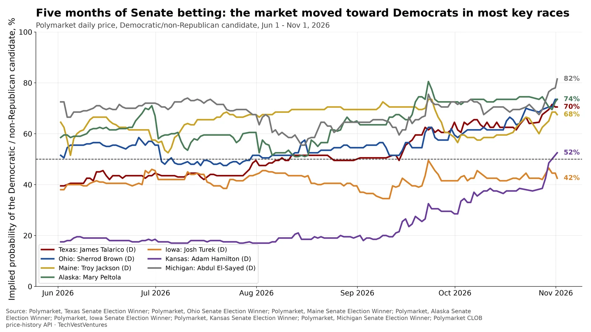
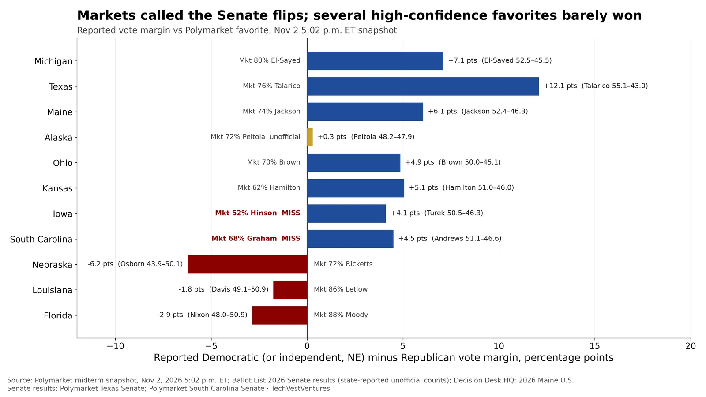

Q5. Senate Races

Polymarket win prices for 19 Senate races with active markets, snapshot Nov 01, 2026 (two days before the Nov 3 election). Non-Republican share is 1 minus the Republican contract price. Bettors favour Democrats in the Republican-held seats of Texas (Talarico 70%), Ohio (Brown 72%), Maine (Jackson 68%) and Alaska (Peltola 72%), and in open Michigan (El-Sayed 80%). Kansas is a toss-up (Hamilton 52%), and Iowa leans Republican (Hinson 58%). Texas is the most heavily traded race at $9.6M. Prices are crowd odds, not forecasts, and thin markets (under $0.5M) can move on small trades.
- Nebraska: independent challenger 27% vs Ricketts 75%. South Carolina: Andrews (D) 26%.
- Prices are the Yes price on each candidate's contract and need not sum to exactly 100% (spreads and fees).
- Same snapshot: Polymarket's Senate-control market gives Democrats 72.5% and Republicans 28.5%.
Note: Peltola is the Democratic candidate in Alaska; the market lists her without party. Some race-level markets are thin, so a single large order can shift a price several points.
Sources: Polymarket, Texas Senate Election Winner Polymarket, Ohio Senate Election Winner Polymarket, Maine Senate Election Winner Polymarket, Alaska Senate Election Winner Polymarket, Iowa Senate Election Winner Polymarket, Kansas Senate Election Winner Polymarket, Senate control

Daily Polymarket prices since Jun 1, 2026 for the Democratic or non-Republican candidate in seven key Senate races. Texas 40% to 70%; Ohio 52% to 74%; Maine 64% to 68%; Alaska 58% to 74%; Iowa 38% to 42%; Kansas 18% to 52%; Michigan 72% to 82%. The biggest swings were Kansas (+34 pts) and Texas (+30 pts), both of which flipped from Republican-leaning to even or Democratic-leaning. Iowa has stayed Republican-leaning throughout.
Note: Daily closing midpoints from Polymarket's public price-history API. Odds are not polls; markets can be moved by a few large traders, and US users trade mainly on regulated venues such as Kalshi.
Sources: Polymarket, Texas Senate Election Winner Polymarket, Ohio Senate Election Winner Polymarket, Maine Senate Election Winner Polymarket, Alaska Senate Election Winner Polymarket, Iowa Senate Election Winner Polymarket, Kansas Senate Election Winner Polymarket, Michigan Senate Election Winner Polymarket CLOB price-history API

Polymarket prices at 5:02 p.m. ET on Nov 2 (the day before the election), versus unofficial reported vote margins fetched Nov 8. Florida’s Ashley Moody was an 87.5% favorite and led 50.86% to 48.00% (+2.9 pts); Louisiana’s Julia Letlow was 86.5% and led 50.88% to 49.12% (+1.8 pts) as of Nov 8. The two misses in this set were South Carolina, where Darline Graham Nordone was a 68.5% favorite and Annie Andrews led 51.14% to 46.64%, and Iowa, a coin flip (Ashley Hinson 51.5%) that Josh Turek led 50.45% to 46.34%. The advertised Democratic flips landed in Texas (Talarico 75.5% in the market, +12.1 pts), Ohio (Brown 70.5%, +4.9 pts) and Maine (Jackson 74.5%, +6.1 pts on Decision Desk HQ’s count). Alaska’s Mary Peltola was a 72.5% favorite and led 48.17% to 47.88% (+0.3 pts) in Ballot List’s unofficial Nov 4 update; that race is not treated as called here.
- Nov 2 snapshot: Moody 87.5% and Letlow 86.5% led by 2.9 and 1.8 points.
- Misses in this set: South Carolina (Graham 68.5%) and Iowa (Hinson 51.5%).
- Texas +12.1 pts (Talarico 75.5%); Ohio +4.9 (Brown 70.5%); Maine +6.1 (Jackson 74.5%).
- Alaska +0.3 pts unofficial (Peltola 72.5% on Nov 2); not treated as called.
Note: Margins use reported candidate percentages, which need not sum to 100% because of third-party and write-in votes. Nebraska’s non-Republican price is the Independent (Dan Osborn) contract, not a Democrat. Opposing view on X: @byajperez said Kalshi ‘is supposed to be better than polls, but it failed’ on the Mississippi Senate count (https://x.com/byajperez/status/2118169107417952515); @0xForecaster argued Kalshi-vs-Polymarket Brier comparisons are distorted by different sample sizes (https://x.com/0xForecaster/status/2119387222008869196). Kalshi-marketing posts cited a 479-of-487 / 98% hit rate (https://x.com/TheWorldEye_/status/2118230124269388169). This chart does not copy the existing 19-of-20 scorecard.
Sources: Polymarket midterm snapshot, Nov 2, 2026 5:02 p.m. ET Ballot List 2026 Senate results (state-reported unofficial counts) Decision Desk HQ: 2026 Maine U.S. Senate results Polymarket Texas Senate Polymarket South Carolina Senate